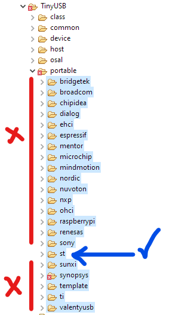

TinyUSB is an open-source cross-platform USB Host/Device stack for embedded systems, designed to be memory-safe with no dynamic allocation and thread-safe with all interrupt events being deferred and then handled in the non-ISR task function.
Introduction
The ST’s USB stack that is included in STM32CubeIDE, has lots of problems, including:
- Large footprint.
- All of the USB services are running on ISR
- Can’t correctly use it in RTOS
In this article, I’m going to show you how to use TinyUSB stack to create a USB mass storage device (MSD) using STM32.
My Envirement:
| Syntax | Description |
|---|---|
| OS | Windows 10 (64bit) |
| Language | C |
| IDE/Compiler | STM32CubeIDE/GCC |
| Target | STM32F429ZITx |
| STM32Cube Firmware | FW_F4 V1.26.2 |
| TinyUSB Version | 0.13.0 |
Hardware
I’m using a custom board with STM32F429ZI, but process isn’t diffrent for other chips and other supported ST MCUs. My board uses Full Speed USB connected to USB_OTG_FS of MCU, based on your hardware, you may also use High Speed or Full Speed USB connected to USB_OTG_HS of MCU.
Project Configuration in CubeMX
USB Peripheral
As i mentioned before, i’m using USB_OTG_FS for usb communication, so first step is to enable this peripheral in cube mx. to do so, must set the Mode of USB_OTG_FS to Device Only and enable global interrupt of USB in NVIC Settings tab of Configuration window.

Clock Configuration
After enabling USB hardware, we must configure the clock of the MCU.
Note
USB peripheral in STM32 need external clock source to work!

Importing TinyUSB library into project
Clone or download the TinyUSB reposetory in a folder. The library itself is in src folder in repository and example codes are in examples.
Create a new folder in Core folder of project structure and name it TinyUSB. Then right click on it and select Import. In the open window select File System (in General category), then click on Browse and navigate to the downloaded folder from last step and select src folder. In the Import window, select src folder, the rest of options in this window must be the same as following image and click on Finish.

The next step is to add the folder to include paths. To do so, right click on project (or Project menu) and select Properties. Then go to C/C++ General -> Paths and Symbols -> Includes and add “Core/TinyUSB”, then click on Apply and Close.

The Code
Adding example files for MSD to project
TinyUSB MSD example is in TinyUSB repository -> examples -> device -> msc_dual_lun. from src folder, import or copy msc_disk_dual.c and usb_descriptors.c files into Src folder of the project structure and tusb_config.h into Inc folder of the project structure.

Edit example codes
In msc_disk_dual.c, remove #include “bsp/board.h” to prevent causing error when compling the code. The default way to configure TinyUSB is to pass configuration symbols in compile time (in board.mk file). to make things easier i directly define the needed symbols in tusb_config.h file in project.
//--------------------------------------------------------------------
// COMMON CONFIGURATION
//--------------------------------------------------------------------
#define CFG_TUSB_MCU OPT_MCU_STM32F4
#define BOARD_DEVICE_RHPORT_SPEED OPT_MODE_FULL_SPEED
#define BOARD_DEVICE_RHPORT_NUM 0
#define CFG_TUSB_RHPORT_MODE (OPT_MODE_DEVICE | OPT_MODE_FULL_SPEED)Redirecting STM32 USB interrupt to TinyUSB stack
Add below code to stm32f4xx_it.c (or it’s equivalent if you are using another STM32 family).
/* USER CODE BEGIN Includes */
#include "tusb.h"
/* USER CODE END Includes */
...
/**
* @brief This function handles USB On The Go FS global interrupt.
*/
void OTG_FS_IRQHandler(void)
{
/* USER CODE BEGIN OTG_FS_IRQn 0 */
tud_int_handler(BOARD_DEVICE_RHPORT_NUM);
return;
/* USER CODE END OTG_FS_IRQn 0 */
HAL_PCD_IRQHandler(&hpcd_USB_OTG_FS);
/* USER CODE BEGIN OTG_FS_IRQn 1 */
/* USER CODE END OTG_FS_IRQn 1 */
}After doing above steps, we must first initialize TinyUSB stack by calling tusb_init() and then continuously calling tud_task() in the main loop of program (or in a task if using RTOS) to service the USB requests.
/* USER CODE BEGIN Includes */
#include "tusb.h"
/* USER CODE END Includes */
/* Infinite loop */
/* USER CODE BEGIN WHILE */
tusb_init();
while (1)
{
tud_task();
/* USER CODE END WHILE */
/* USER CODE BEGIN 3 */
}
/* USER CODE END 3 */Now compile and flash the code.
Info
The TinyUSB version that i used (0.13.0), has a code guard bug for synopsis port, that cause the multiple multiple definition of … error when compling the code. for simplicity i deleted all ports in portable folder of imported TinyUSB library but the ST port from the project.

After deleting the mentioned files, performe a clean build of project!

Refrences: